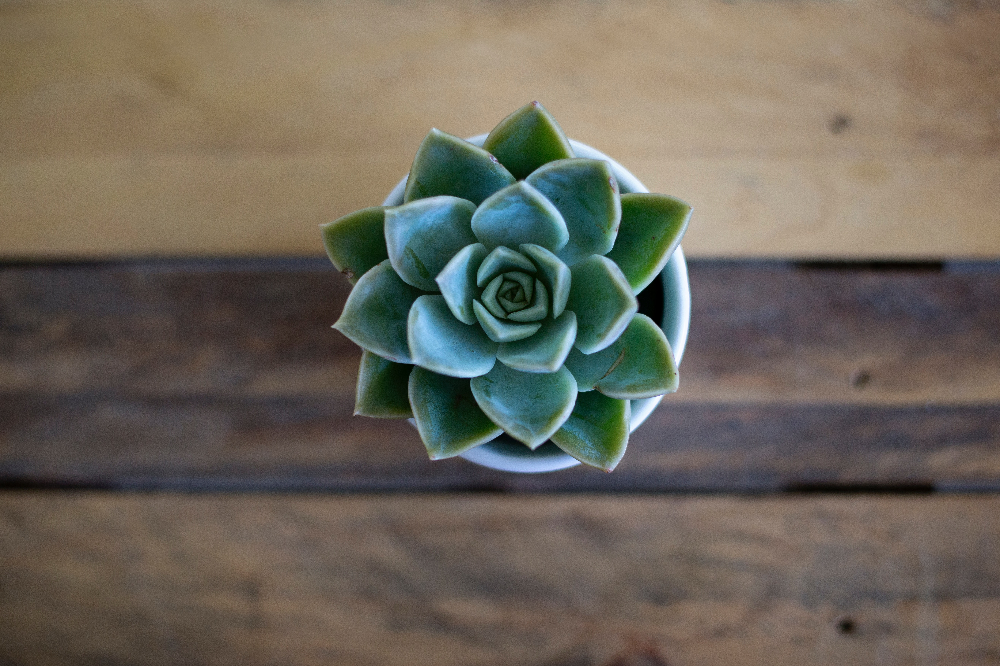
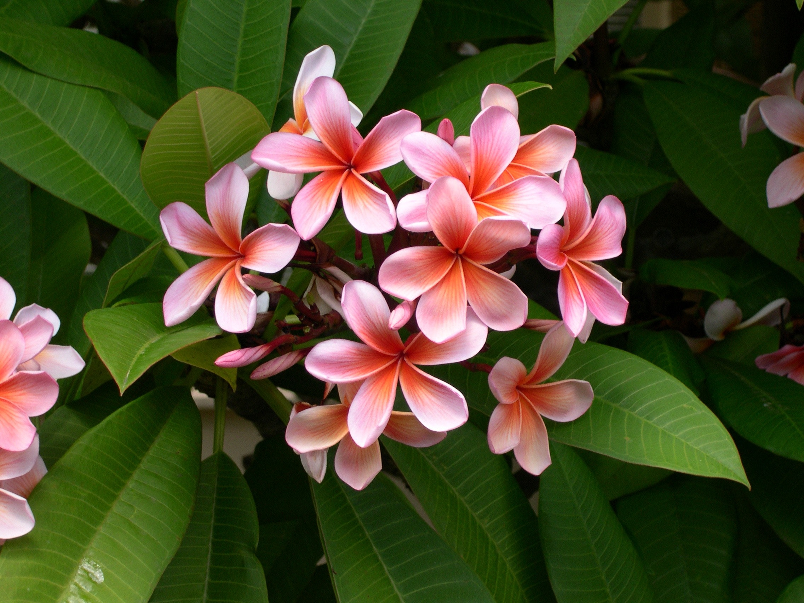
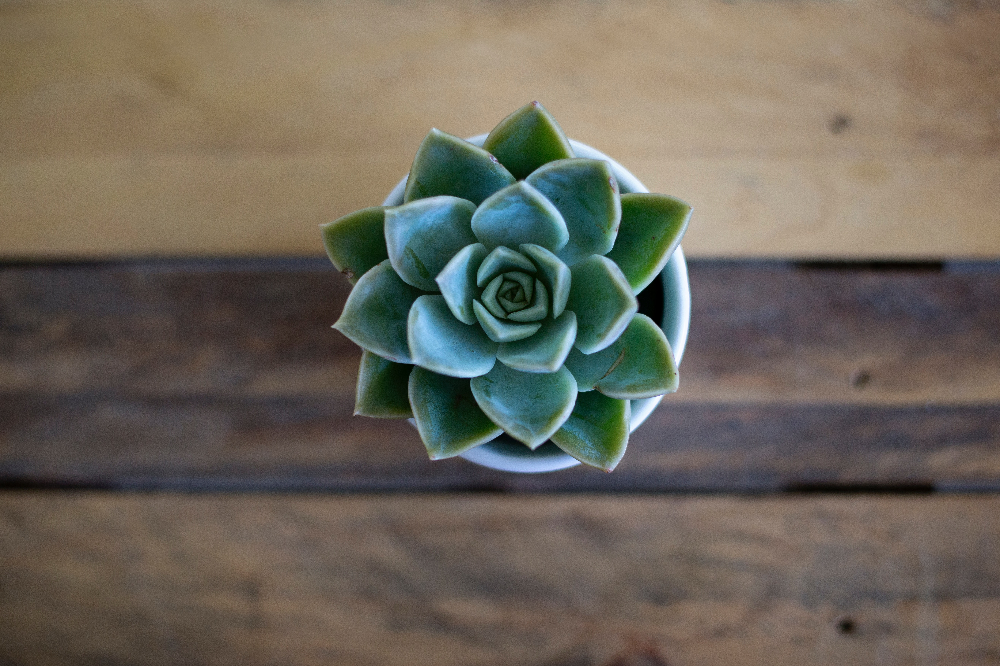
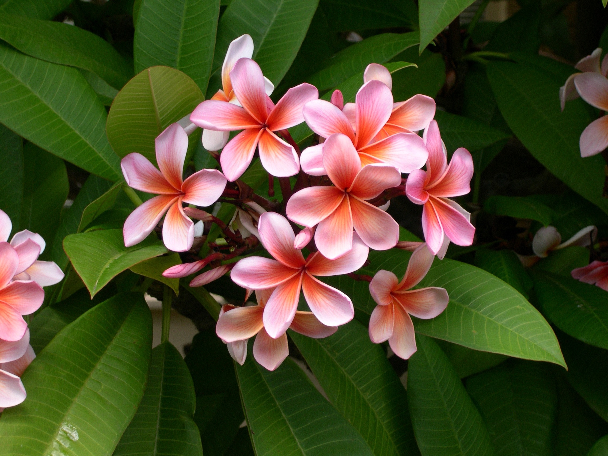

Aplicatia iubitorilor de plante a fost creata special pentru colectionarii in acest domeniu, pentru o mai buna organizare
a plantelor sale. Cu un cont valid in aplicatie esti la un click distanta de a-ti crea propriile colectii si a adauga plantele dorite in
portofoliul tau, pagina de Help te va ajuta daca ai nevoie.
Mai mult decat atat, daca esti curios din fire si vrei sa descoperi cat mai multe despre plante, butonul de search sta la dispozitia ta
de pe orice pagina odata logat, poti cauta plante din diverse categorii (dupa nume, sau bineintele cuvinte cheie).
Inregistreaza-te si creaza-ti propriile colectii cat mai atractive iar noi vom pastra un top al acestora, pe care il poti vedea oricand si tu
sau topul plantelor daca vrei sa vezi ce plante sunt cele mai indragite de colectionarii nostri. De asemenea poti cere oricand un raport al acestor
clasamente. Vrem sa fii mereu cel mai usor si bine informat!


 


